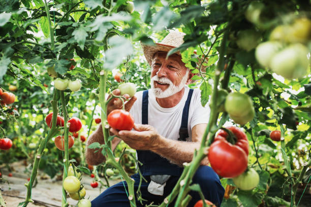

We are a familiar company that focuses on organic cultivation, taking the nutrients that each stage of the plant requires in the best possible way, resulting in the tasty, aromatic,and visual intensity of the original knowledge of each species.
